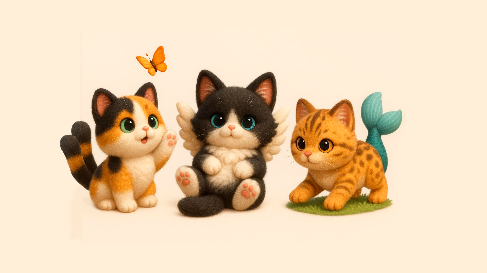
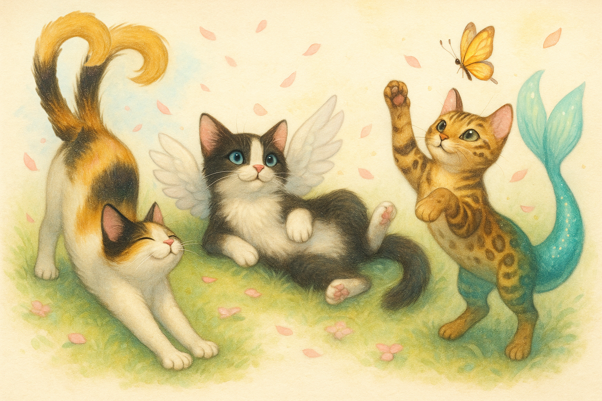
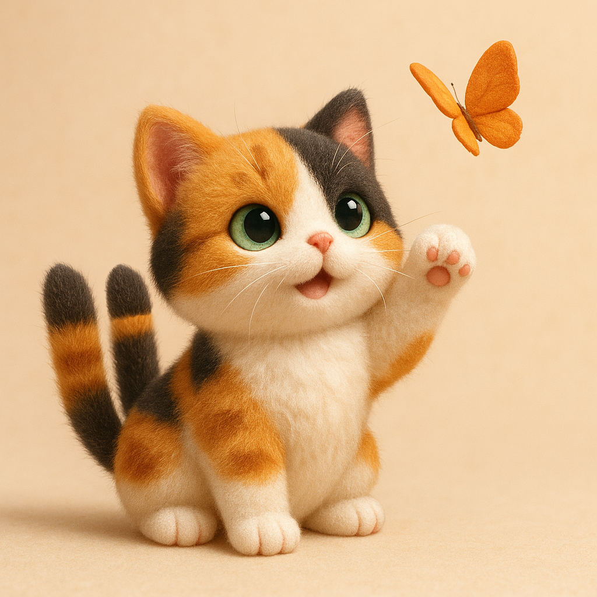
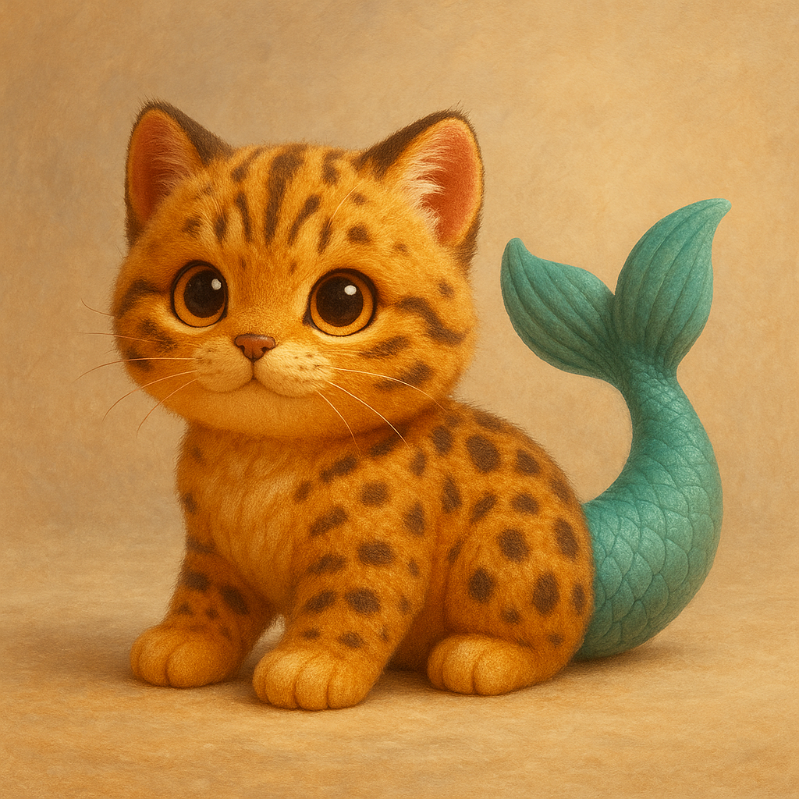
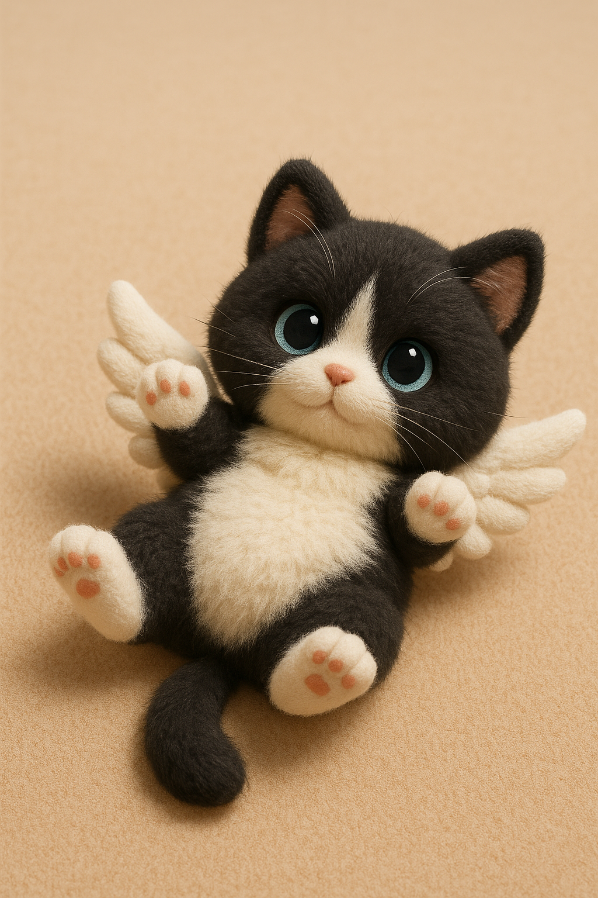

Cozy Neko World

Nome do Jogo:
Cozy Neko World – Título Temporário
Especificações Técnicas
Aparência:
3D cute/kawaii em tons pastéis;
Câmera:
Terceira pessoa;
Plataforma:
PC e Nintendo Switch;
Jogadores:
Single-Player;
Gênero:
Cozy, Dating/Farming Simulator com elementos de Manipulação Genética;
Público-alvo:
Jogadores e jogadoras maiores de 16 anos que gostem de jogos cozy com simulação de fazenda, encontros e criação de pets sem objetivos ou quests claras que guiem sua evolução.
Idade:
A idade sugerida se deve à temas um pouco mais sérios como depressão, ansiedade, sensação de falta de propósito e local no mundo assim como alguns encontros finais podendo ir para um lado mais sexualmente sugestivos.
Objetivos
Objetivo Principal:
O objetivo principal do jogo como experiência é que seja um jogo cozy, sem muitas pressões ou punições e que permita ao jogador jogar em seu ritmo, guiado por sua própria curiosidade e interesse em tudo o que o jogo tem a oferecer. O objetivo principal do jogo é obter e manter o selo de 5 estrelas em sua fazenda por pelo menos 3 meses (in-game).
Objetivos Secundários:
- Obter nível de amizade mínimo de “confiável” com todos os NPCs;
- Ter um relacionamento romântico estável com pelo menos um NPC;
- Adquirir e manter pelo menos um animal de cada cor básica;
- Adquirir e manter pelo menos um animal de cada dupla de genes afins.
Sistemas do Jogo:
-
Sistema de Coleta de Recursos no Mundo

-
Sistema de Fazendinha para Produção de Recursos

-
Sistema de Alimentação de Pets

-
Sistema de Compra e Venda de Recursos

-
Sistema de Armazenamento e Libertação de Pets

-
Sistema de Manipulação Genética (Adição e Substituição de Genes) dos Pets

-
Sistema de Breeding entre Pets

-
Sistema de Geracão de filhotes a partir das cores e genes dos pais


-
Sistema de Amizade/Romance com NPCs

-
Sistema de Avaliação da Fazenda

Visão Geral Essencial
Resumo:
O jogo é um farm/social-simulator com mecânicas de breeding de pets para a conquista de cores e genes(padrões de pelo, pena e escamas) de raridades diferentes. A cor dos animais é determinado de forma aleatória pelo jogo, mas os genes podem ser alterados pelo jogador após serem obtidos através de exploração, interação com NPCs ou através da negociação em lojas.
Aspectos Fundamentais:
- O jogador está numa cidade aconchegante e meiga, cujos moradores são dedicados à criação e manutenção de nekos mágicos que ali habitam;
- O jogador precisará aumentar a sua moral/amizade com a cidade para que possa comprar recursos mais variados e vender seus recursos por um valor maior;
- O jogador pode explorar o mundo para obter recursos, gerá-los em suas fazendas ou comprá-los na cidade;
- O jogador pode utilizar itens de "gene" para mudar os padrões na pelagem de seus pets, adquirindo animais que sejam cada vez mais agradáveis para seu gosto pessoal.
Golden Nuggets:
- O jogo proporciona gráficos numa temática meiga, proporção cute/kawaii e tons pasteis;
- As pelagens dos animais podem ser customizadas de forma a imitar o mundo real ou não;
- Os jogadores podem se expressar através da estética de suas fazendas e pets;
- O sistema de amizade/romance visa trazer vantagens ao jogador assim como maior customização de sua jornada;
- O relacionamento do jogador com os NPCs determina o end-game do jogo.
Referências Principais:
Mood/Aparência Geral:
 Animal Crossing, Super Mario Odyssey e Kirby Forgotten Lands;
Animal Crossing, Super Mario Odyssey e Kirby Forgotten Lands;
Farming:
 Stardew Valley e Cloud Meadow;
Stardew Valley e Cloud Meadow;
Exploração no World:
 Genshin Impact e Infinity Nikki;
Genshin Impact e Infinity Nikki;
Manipulação Genética:

Dating Simulator:
 Monster Prom e MeChat (mostra se o personagem gostou ou não da interação e o status do relacionamento).
Monster Prom e MeChat (mostra se o personagem gostou ou não da interação e o status do relacionamento).
Moodboard Geral

Contexto do Jogo
História do Jogo:
O personagem principal está no ponto de ônibus, está calor e ele está cansado, seus olhos pesados... Ele está quase adormecendo quando vê um estranho gato com dois rabos (nekomata) atravessar a rua correndo, ele segue o gato através da grama alta e quando acha que está quase o alcançando... Cai em um grande buraco. O interior do buraco é grande e a queda longa, o personagem principal cai por ele enquanto ultrapassa alguns itens, mas antes que ele acerte o chão, ele desmaia. Ao acordar, o personagem se vê no centro de uma praça, o gato de duas caldas que ele estava perseguindo o observando de perto, ao se levantar, ele percebe um outro personagem humano se aproximando. O prefeito da cidade apresenta a si mesmo e também a ilha onde estão de forma superficial. Apesar da confusão do personagem principal, o prefeito insiste que ele fique com a chave para uma fazenda que está sem uso até decidir se gostaria de ficar ou ir embora. O gato de duas caudas responsável pela queda do personagem na ilha, que o prefeito diz ser um Nikoneko, segue o personagem conforme ele anda pela ilha, interagindo e conhecendo os demais NPCs que eu sua maioria, também possuem algum tipo de gato mágico ao lado. Ao fim do primeiro dia (determinado pelo jogador ao entrar na casa da fazenda que lhe foi dada) o jogador será convidado a descansar. O segundo dia o levará através do tutorial de coleta no mundo, negociação com as lojas (para compra de sementes) e então de plantação. Desse ponto em diante, o jogo é guiado pelo ritmo do jogador.
Eventos Anteriores:
Em relação à história do protagonista: Pouco se fala do protagonista, apenas que ele estava sem rumo e sem esperanças enquanto esperava o ônibus antes de cair no buraco seguindo o nikoneko.
Em relação ao mundo: Muito antes dos primeiros humanos chegarem em Fushijima, a ilha era habitada por dois irmãos deuses. Kazetobi, o deus do vento, era energético e inquieto, voando por entre as nuvens no céu sem nenhuma preocupação em sua mente. Uminari, seu irmão, por outro lado, preferia passar seu tempo nas profundezas, refletindo sobre a sensação das correntes marinhas em sua pele. Apesar de tão diferentes, os irmãos não brigavam, mas, também não costumavam passar muito tempo juntos, interagindo pouco ou quase nada, ao menos, até quando sentiram algo de diferente na ilha antes vazia que ficava entre seus domínios. Do centro da ilha havia nascido um grande broto e dele surgiu Tsuchime, deusa da terra e Tsuchime era doce, gentil e acima de tudo, criativa. Enquanto os irmãos, apaixonados por ela, brigavam por sua atenção, Tsuchime estava criando montanhas e vales, a areia da praia, tornando a terra fértil para que flores e árvores crescessem dela. Mas as flores que nasciam eram fracas e lhes faltava luz e então, Tsuchime e Kazetobi criaram o sol. Mas o calor excessivo do sol era demais para a fauna da ilha e Tsuchime decidiu ir até Uminari, produzindo com ele a lua. Quando a ilha já estava bela o suficiente, Tsuchime ajoelhou-se no centro da ilha e com suas mãos pequenas, moldou na argila os primeiros Nikonekos, com caudas duplas longas e flexíveis, tornando-os expressivos mesmo enquanto ainda eram apenas esculturas de barro. E então, com um beijo suave contra suas cabeças, Tsuchime lhes deu a vida, um por um e seus Nikonekos logo habitaram a ilha, correndo por entre as folhas e escalando as árvores. Kazetobi, buscando novamente pela atencão de Tsuchime, moldou com as nuvens os primeiros Hanenekos, dando-lhes asas fortes que lhes permitiria voar e brincar na brisa como ele mesmo fazia. Com um bater de palmas forte e sonoro, deu-lhes a vida, e eles logo desceram para brincar com os Nikonekos criados por Tsuchime. Uminari, por sua vez, moldou em seus braços a espuma das ondas para criar os primeiros Naminekos, com longas caudas de peixe que lher permitiriam nadar pelos mares como ele mesmo fazia. Com um soprar de bilhas, lhes deu a vida e eles log se juntaram aos Nikonekos e Hanenekos brincando na areia da praia. Daquela época até agora, muitos outros seres surgiram na ilha, mas, nenhuim tão místico como os nekos criados pelos três deuses. Na ilha agora pessoas e animais vivem em paz, numa comunidade otimista e auto-sustentável, onde aqueles que estavam perdidos fora da ilha podem encontrar suas verdadeiras vocações e desejos.
Objetos Essenciais ao Jogo
Personagens:
Avatar do Jogador:
O jogador pode escolher entre o avatar de protagonista feminino ou masculino, ambos já pré-estabelecidos pelo jogo, porém, com diferenças na estrutura corporal assim como no comprimento do cabelo (Similar aos protagonistas em Cloud Meadow e Royal Alchemist ).
NPCs:
No jogo temos oito NPCs com os quais o jogador pode interagir e desenvolver um relacionamento romântico. E mais quatro NPCs não-dateaveis que ajudaram o jogador durante sua jornada na cidade.
NPCs Non-datable
-
O prefeito: Nome: Satoshi Yonamine Idade: 55 anos Personalidade: Calmo e diplomático, geralmente consegue resolver situações de conflito com humor e compromisso. Apesar da idade um pouco mais avançada, não demonstra resistência diante dos avanços da ilha. Aparência: Altura mediana, cabelos começando a ficar grisalhos, olhos castanhos. Neko: Está sempre acompanhado de um Nikoneko de pelo preto e barriga branca levemente gordinho. Serventia na cidade: O jogador não consegue controlar quando encontra o prefeito.
-
O Menino do Jornal: Nome: Kaito Nakahara Idade: 12 anos Personalidade: Energético e sabichão, Kaito conhece a ilha como ninguém e sabe onde encontrar tudo e a todos. Sempre. Aparência: Pele bronzeada de tanto tempo no sol, cabelo negro curto e bagunçado pelo vento, costuma usar um kimono azul claro leve para parar o vento e refletir um pouco do sol o que lhe dá maior conforto quando passa o dia todo tentando vender seus jornais. Neko: Kaito não é acompanhado por um Neko ainda. Serventia na cidade: Sempre que o jogador desejar encontrar um NPC-romanceável, basta perguntar a Kaito.
-
A Fazendeira: Nome: Emiko Higa Idade: 42 anos Personalidade:Trabalhadora e quieta, está geralmente com um sorriso gentil no rosto enquanto cuida de sua própria plantação. Ela não é muito de conversa, então, quando diz algo a cidade toda costuma se interessar. Aparência: Baixa, porém com um corpo muscular e mãos calejadas de trabalhar na terra a tanto tempo, assim como a pele de seu filho, Kaito, a pele dela também é bronzeada devido a exposição ao sol. Neko: Sua neko é uma haneneko cor de pêssego com um degradê suave na ponta do rabo e asas brancas. Serventia na cidade: Emiko é a personagem responsável por ensinar o jogador o tutorial do sistema de fazenda.
-
O Quebra-galho Nome: Kenji Aragaki Idade: 37 anos Personalidade: Um tanto quanto impaciente, Kenji está geralmente mais interessado no que precisa ser feito do que nos demais. Ele é bastante independente e não costuma interagir mais que o necessário com ninguém, preferindo por vezes comunicar-se por carta ou por mensagens do que pessoalmente. Aparência: Alto, com ombros largos e corpo forte. Os braços são cobertos de cicatrizes por conta de seu trabalho exigente. Neko: É sabido que Kenji é acompanhado por um Namineko, azul escuro, mas, é quase tão raro vê-lo quanto é raro ver Kenji. Serventia na cidade: Kenji é o NPC responsável por construir as melhorias na fazendo do jogador assim como fornecer as ferramentas necessárias para a manutenção da plantação em sua fazenda também.
NPCs Romanceáveis
Os NPCs Romanceáveis são todos "playersexuais" (ou seja, tem interesse no gênero escolhido pelo jogador), mas seus arquétipos podem ser mais atraentes para algumas comunidades específicas do que para outras.
-
Lliang Wei: Inspiração: Zhongli Nome: Lliang Wei Arquétipo: O Protetor Estóico Idade: 33 anos País de Origem: China Ocupação: Curador de Artefatos Antigos Personalidade: Calmo, atencioso, gosta de aproveitar as tardes tomando chá e contando histórias. Aparência: Alto, com cabelos negros longos e olhos igualmente negros. Geralmente veste roupas um pouco mais formais, com algum artigo ou acessório que remeta a sua origem chinesa. Neko: Lliang está sempre acompanhado por seu Haneneko negro com um padrão de escamas douradas ao longo de seu corpo. Primeiro contato com o jogador: O jogador encontra Lliang pela primeira vez tomando chá no centro da cidade conversando com o prefeito sobre algum artefato que eles haviam encontrado recentemente, ele volta sua atenção para o jogador e se apresenta assim que percebe a presença do mesmo. Papel na cidade: O jogador poderá negociar com Lliang os artefatos que encontrar em suas explorações.
-
Luka Vetrova Inspiração: Tartaglia Nome: Luka Vetrova Arquétipo: O Charmoso Perigoso Idade: 25 anos País de Origem: Russia Ocupação: Mergulhador Free Dive e Patinador Profissional Personalidade: Extrovertido, travesso e orgulhoso, Luka está constantemente flertando com o perigo e com as pessoas com as quais gosta de competir. Aparência: Cabelos loiros pálidos, olhos azuis e constituição atlética. Luka possui algumas cicatrizes devido às várias encrencas que já se meteu e não tem problema em exibí-las. Está geralmente trajando roupas informais e praianas. Neko: Luka está sempre acompanhado de sua Namineko de pelos brancos manchados em laranja e negro como uma carpa. Primeiro contato com o jogador: Luka está na praia relaxando após um mergulho quando o jogador o encontra pela primeira vez, Luka já é caloroso com o jogador desde seu primeiro contato, porém, constantemente provoca o jogador quanto à, bem, tudo. Papel na cidade: O jogador poderá receber itens ao vencer Luka em suas competições sem sentido e de todo tipo.
-
Thiago Monteverde Inspiração: Halsin Nome: Thiago Monteverde Arquétipo: O Gigante Gentil Idade: 30 amos País de Origem: Brasil Ocupação: Ativista Ambiental Personalidade: Afetuoso, carinhoso e paciente, Thiago não pressiona ninguém mas está sempre de ouvidos abertos para qualquer um que precise desabafar com ele. Thiago é também o mais preocupado com o gasto responsável dos recursos da ilha, embora todos concordem com a importância disso. Aparência: Thiago é alto, forte e bastante muscular. Sua pele bronzeada e seus olhos castanhos, assim como seus cabelos, parecem sempre estar carregados pelo calor do sol. Neko: Thiago está sempre acompanhado por seu Nikoneko castanho cuja pelagem exibe padrões como se fossem os veios de um tronco de árvore. Primeiro contato com o jogador: Thiago é encontrado pela primeira vez na loja de Emiko negociando sementes. Papel na cidade: Thiago é o responsável por negociar com o jogador novos genes.
-
Laurent Deveraux Inspiração: Astarion Nome: Laurent Deveraux Arquétipo: O Playboy Sedutor Idade: 23 anos País de Origem: França Ocupação: Estilista Personalidade: Sedutor, sarcástico e chamativo, Laurent gosta de ser o centro das atenções embora tenha dificuldade em manter sua face inexpressiva quando Luka o provoca. Aparência: Laurent possui cabelos ruivos e olhos verdes, bochechas altas e bem marcadas assim como um corpo bastante magro. Neko: Laurent está frequentemente acompanhado por sua Haneneko totalmente branca. Primeiro contato com o jogador: Laurent estará no centro da cidade com um caderno em mãos fazendo anotações quando o jogador o encontrar, mas ele rapidamente fechará o caderno, acusando o jogador de tentar bisbilhotar onde não deve. Papel na cidade: No futuro, o papel de Laurent será vender roupas diferentes para que o jogador possa customizar seu avatar, mas não na versão inicial do jogo.
-
Norah Quinn Inspiração: Karlach Nome: Norah Quinn Arquétipo: A Gigante Gentil Idade: 31 anos País de Origem: Irlanda Ocupação: Protetora Ambiental Personalidade: Alegre, de fala alta e expressiva. Norah é sempre facilmente encontrável, onde quer que esteja, mas, seu temperamento gentil e carinhoso faz todos sentirem-se mais protegidos com ela por perto. Aparência: Alta, com um corpo muscular e forte coberto em tatuagens de origem celta. Ela tem sardas, cabelo cor de cobre e olhos castanho avermelhado. Neko: Norah está sempre acompanhada de seu Haneneko de pelos avermelhados cujas extremidades são brancas, se assemelhando bastante a uma raposa. Primeiro contato com o jogador: Norah estará no mundo, cuidando de um neko ferido quando o jogador a encontra. Papel na cidade: Norah será a vendedora de novos nekos para o jogador. Seus nekos disponíveis são aleatórios e sua oferta será rotativa.
-
Selene Moreau Inspiração: Minthara Nome: Selene Moreau Arquétipo: A Estrategista Fria Idade: 26 anos País de Origem: Suíça Ocupação: Selene era uma comandante militar antes de chegar na ilha, na ilha, ela ainda não descobriu exatamente quem quer ser. Personalidade: Disciplinada, inteligente e extremamente exigente com os outros e consigo mesma, Selene raramente relaxa e ri, ou mesmo sorri. Aparência: Estrutura mediana, cabelo negro e olhos azuis, se veste em roupas mais sérias com um corte que esconde muito de sua pele. Neko: Selene raramente está acompanhada por sua Namineko de pelagem cinza azulada. Primeiro contato com o jogador: Selene será uma NPC que o jogador apenas terá contato após atingir um certo nível de sucesso em sua fazenda e manutenção, ele encontrará Selene ao tentar encontrar Kenji para pedir uma nova ampliação. Papel na cidade: Selene faz parte da avaliação em estrelas da fazenda do jogador.
-
Hana Mizuki Inspiração: Shirahoshi Nome: Hana Mizuki Arquétipo: A Princesa Frágil Idade: 19 anos País de Origem: Japão Ocupação: Treinadora de Nekos Personalidade: Doce, tímida e boa com animais. Hana se dá melhor com os nekos da ilha do que com os outros humanos e por conta disso, logo começou a ser capaz de ensinar pequenos truques para eles (não que eles precisassem de ajuda, uma vez que se tratam de criaturas extremamente inteligentes). Sua timidez a faz se sentir frequentemente inapropriada. Aparência: Cabelos longos e loiros de natureza delicada, olhos verdes brilhantes e um sorriso gentil. Hana geralmente usa kimonos rosas. Neko: Hana está sempre acompanhada por sua Namineko rosa com pelagem em padrões de conchas e pérolas. Primeiro contato com o jogador: Hana pode ser encontrada um dia conversando com Kaito, o único humano com quem ela sempre se sentiu confortável conversando. Papel na cidade: No futuro, Hana auxiliará o jogador a colocar nekos para trabalhar em sua fazenda, diminuindo o trabalho e constante manutenção que o jogador terá de ter com essa parte do jogo, mas isso não estará na versão inicial.
-
Victoria Brandt Inspiração: Integra Nome: Victoria Brandt Arquétipo: A Nobre Comandante Idade: 32 anos País de Origem: Alemanha Ocupação: Líder da Instituição de Pesquisa Mitológica da Ilha Personalidade: Autoritátia, dedicada e levemente workaholic, Victoria constantemente tem demandas para quase todos os demais membros da ilha, apesar de sua forma de falar, os demais entender, em sua maioria, que ela apenas está dedicada à preservação da história da ilha. Aparência: Alta, de vestes formais e longo cabelo loiro escuro liso. Seus olhos são acinzentados e ela constantemente possui olheiras sob seus olhos. Neko: O nikoneko de Victoria constantemente está dormindo em seu colo ou sua mesa enquanto ela trabalha, ele é rajado de cinza com branco. Primeiro contato com o jogador: O jogador encontrará Victoria também em uma de suas visitar ao prefeito quando ela estará lhe dando ordens sobre a preservação da história e mitologia da ilha. Papel na cidade: Victoria enviará cartas ao jogador referente à história por trás dos artefatos que ele vender a Lliang, sinal de que de alguma forma o artefato chegou até ela (através do prefeito).
Pets:

-
Nikoneko:  Gatos de duas caudas, inspirados nos nekomatas, youkais japoneses. São ligados à terra e flora da ilha.
-
Namineko:  Gatos com cauda de sereia no lugar de suas caudas normais, inspirados nas sereias e demais seres metade algo, metade peixe. São ligados à água e ao mar ao redor da ilha.
-
Haneneko:  Gatos com asas de anjo em suas costas, inspirados em anjos, embora esteja vivos e não sejam anjos. São ligados ao vento e ao céu da ilha.
-
Hōōneko/Ryūneko: Em Desenvolvimentos, serão gatos ligados ao sol e à lua da ilha. Ambos viriam em versões futuras do jogo.
Ferramentas:
- Pá; Usada para cavar um buraco no chão.
- Regador; Usado para regar a semente recém-plantada no chão.
Estruturas:
Na cidade:
- Prefeitura;
- Casa/Loja dos NPCs;
- Praça central (com fonte e bancos em disposição circular);
Na fazenda:
- Casa principal;
- Área de Plantação (alocado pelo jogador);
- Área de Exposição de nekos (alocado pelo jogador);
- Área de Breeding (alocado pelo jogador);
Objetos:
Na cidade:
- Placas para orientação do jogador;
- Caminho de Pedras para auxiliar na orientação do jogador;
- Props de Ambientação;
Na fazenda:
- Comedouro para deposito de recursos para alimentar os nekos expostos;
- Placa na entrada;
- Cercas, bancos e demais props para enfeite da fazenda (alocados pelo jogador);
Conflitos e Soluções:
O principal conflito do jogo é o jogador encontrar seu local com essa comunidade e desenvolver um relacionamento com os NPCs que a compõe. Cabe ao jogador escolher se irá buscar uma relação amigável com todos, ignorar alguns, desenvolver um romance ou não.
Inteligência Artificial:
- O neko escolhido pelo jogador deve acompanhá-lo quando na cidade;
- Os demais nekos devem mover-se enquanto expostos na fazenda, apenas para que não fiquem estáticos e isso seja um pouco desconfortável;
- Os NPCs devem se mover levemente quando na cidade (em animações idle ou de caminhada mesmo);
- Os nekos dos NPCs devem acompanhar suas ações;
- Os recursos no mundo devem ser realocados todo início de dia em locais pré-definidos;
- O rating da fazenda deve ser checado sempre que o jogador falar com o prefeito, verificando assim a condição de "vitória".
Fluxo do Jogo
Use the game play section to create a descriptive paragraph about how the game is played. You want the use tor imagine they are actually playing the game. Try not to use generic (i.e., broad, non-descriptive) terms when writing about the game play. For example, few readers want to hear statements such as, “enemy_1 will have more hit points than enemy_2.” Instead, it’s better to make statements like, “The Lazarus Fighter has more armour than the Apollo Fighter.”
Outline do Fluxo do Jogo:
This outline will vary depending on the type of game.
- Opening the game application
- Game options
- Story synopsis
- Modes
- Game elements
- Game levels
- Player’s controls
- Winning
- Losing
- End
- Why is all this fun?
Controles:
- EM CONSTRUÇÃO -
DESIGN DOCUMENT
This document describes how GameObjects behave, how they’re controlled and their properties. This is often referred to as the “mechanics” of the game. This documentation is primarily concerned with the game itself. This part of the document is meant to be modular, meaning you could have several different Game Design Documents attached to the Concept Document.
Design Guidelines
This is an important statement about any creative restrictions that need to be considered and includes brief statements about the general (i.e., overall) goal of the design.
Game Design Definitions
This section established the definition of the game play. Definitions should include how a player wins, loses, transitions between levels, and the main focus of the gameplay.
Game Flowchart
The game flowchart provides a visual of how the different game elements and their properties interact. Game flowcharts should represent Objects, Properties, and Actions present in the game. Each of these items should have a number reference to where they exist within the game mechanics document.
- Menu
- Synopsis
- Game Play
- Player Control
- Game Over (Winning and Losing)
Player Definition
- Use this section for quick descriptions that define the player
- Use the Player Properties section (below) to define the properties for each player. Player Properties can be affected by the player’s action or interaction with other game elements. Define the properties and how they affect the player’s current game.
- Use the Player Rewards section to make a list of all objects that affect the player in a positive way. Define these objects by describing what affect they cause and how the player can use the object.
Player Definitions
A suggested list may include:
- Health
- Weapons
- Actions
Player Properties
Each property should mention a feedback as a result of the property changing.
Player Rewards (power-ups and pick-ups)
Make a list of all objects that affect the player in a positive way (e.g., health replenished).
User Interface (UI)
This is where you’ll include a description of the user’s control of the game. Think about which buttons on a device would be best suited for the game. Consider what the worst layout is, then ask yourself if your UI is it still playable. A visual representation can be added where you relate the physical controls to the actions in the game. When designing the UI, it may be valuable to research quality control and user interface (UI) design information.
Template based on Unity's GDD Template. Available at: Unity's GDD Template